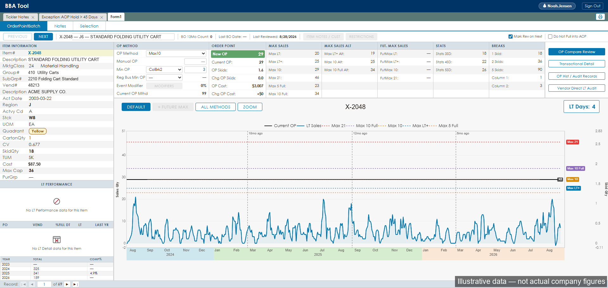
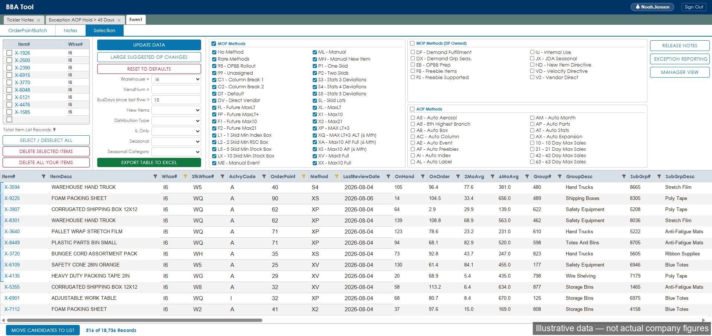
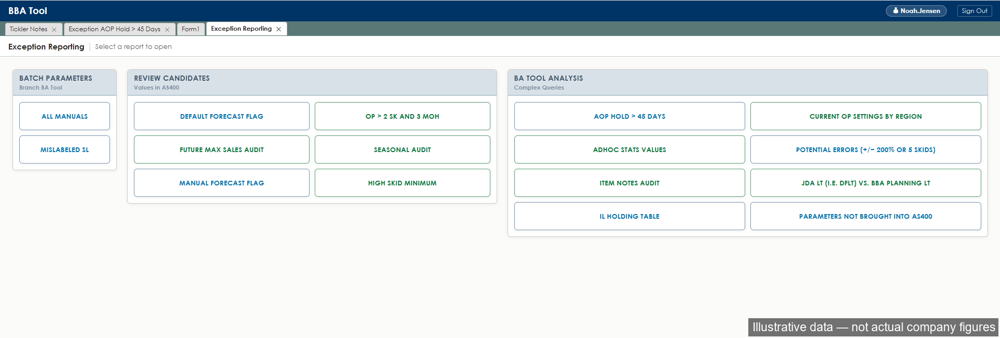
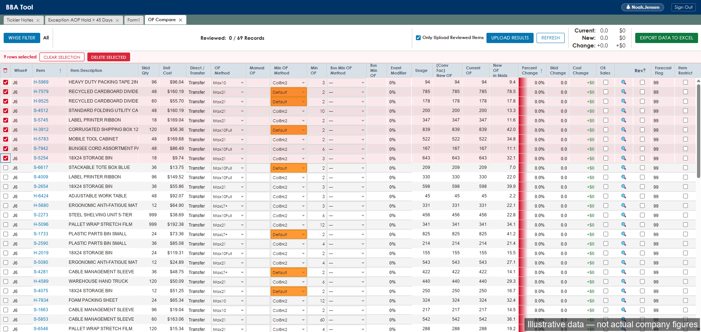
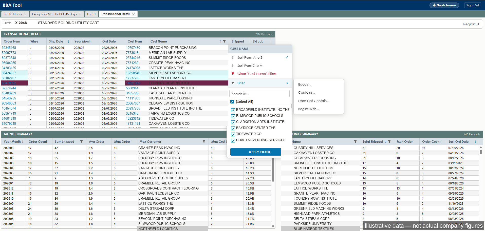

BBA Tool — Inventory Management Platform
A full modernization of a legacy Microsoft Access application used by the Purchasing and Demand Planning departments to manage inventory levels, product information, sales event planning, and custom reporting.
Problem
The legacy Access-based tool was slow, single-user-oriented, and difficult to maintain or extend.
My Role
Rebuilt the application end-to-end with a modernized UI, optimized runtime performance, multi-building/multi-warehouse support, and expanded concurrent-user access with proper security controls.
Impact
Adopted department-wide (50+ users), streamlining daily inventory planning workflows and creating a maintainable foundation for future feature requests.




